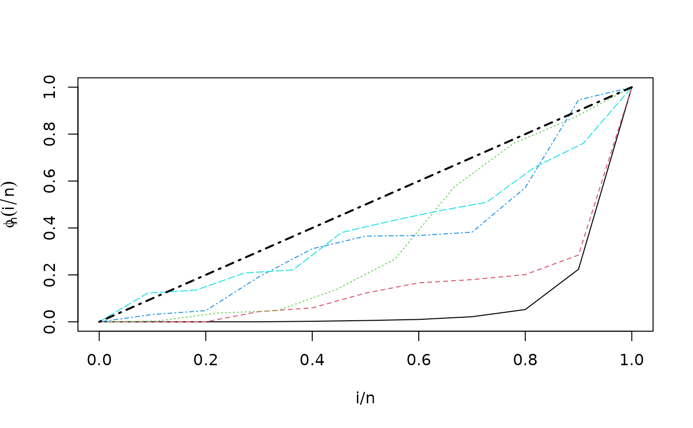

Empirical Total Time on Test (TTT), analytic version.
Source:R/TTTE_Analytical.R
TTTE_Analytical.Rd![[Experimental]](figures/lifecycle-experimental.svg)
This function allows to compute the TTT curve from a formula containing a factor type variable (classification variable).
Usage
TTTE_Analytical(
formula,
response = NULL,
scaled = TRUE,
data = NULL,
method = c("Barlow", "censored"),
partition_method = NULL,
silent = FALSE,
...
)Arguments
- formula
an object of class
formulawith the response on the left of an operator~. The right side can be a factor variable as term or an1if a classification by factor levels is not desired.- response
an optional numeric vector with data of the response variable. Using this argument is equivalent to define a formula with the right side such as
~ 1. See the fourth example below.- scaled
logical. If
TRUE(default value), scaled TTT is computed.- data
an optional data frame containing the variables (response and the factor, if it is desired). If data is not specified, the variables are taken from the environment from which
TTT_analyticalis called.- method
a character specifying the method of computation. There are two options available:
'Barlow'and'censored'. Further information can be found in the Details section.- partition_method
a list specifying cluster formation when the covariate in
formulais numeric, or when the data has several covariates. 'quantile-based' method is the only one currently available (See the last example).- silent
logical. If TRUE, warnings of
TTTE_Analyticalare suppressed.- ...
further arguments passing to
survfit.
Value
A list with class object Empirical.TTT containing a list with the
following information:
- i/n`
A matrix containing the empirical quantiles. This matrix has the number of columns equals to the number of levels of the factor considered (number of strata).
- phi_n
A matrix containing the values of empirical TTT. his matrix has the number of columns equals to the number of levels of the factor considered (number of strata).
- strata
A numeric named vector storing the number of observations per strata, and the name of each strata (names of the levels of the factor).
Details
When method argument is set as 'Barlow', this function
uses the original expression of empirical TTT presented by
Barlow (1979)
and used by
Aarset (1987)
:
$$\phi_n\left( \frac{r}{n}\right) = \frac{\left( \sum_{i=1}^{r} T_{(i)} \right) + (n-r)T_{(r)}}{\sum_{i=1}^{n} T_i}$$
where \(T_{(r)}\) is the \(r^{th}\) order statistic, with
\(r=1,2,\dots, n\), and \(n\) is the sample size. On the other hand, the option
'censored' is an implementation based on integrals presented in
Westberg and Klefsjö (1994)
, and using
survfit to compute the Kaplan-Meier estimator:
$$\phi_n\left( \frac{r}{n}\right) = \sum_{j=1}^{r} \left[ \prod_{i=1}^{j} \left( 1 - \frac{d_i}{n_i}\right) \right] \left(T_{(j)} - T_{(j-1)} \right)$$
References
Barlow RE (1979). “Geometry of the total time on test transform.” Naval Research Logistics Quarterly, 26(3), 393–402. ISSN 00281441, doi:10.1002/nav.3800260303 .
Aarset MV (1987). “How to Identify a Bathtub Hazard Rate.” IEEE Transactions on Reliability, R-36(1), 106–108. ISSN 15581721, doi:10.1109/TR.1987.5222310 .
Klefsjö B (1991). “TTT-plotting - a tool for both theoretical and practical problems.” Journal of Statistical Planning and Inference, 29(1-2), 99–110. ISSN 03783758, doi:10.1016/0378-3758(92)90125-C , https://linkinghub.elsevier.com/retrieve/pii/037837589290125C.
Westberg U, Klefsjö B (1994). “TTT-plotting for censored data based on the piecewise exponential estimator.” International Journal of Reliability, Quality and Safety Engineering, 01(01), 1–13. ISSN 0218-5393, doi:10.1142/S0218539394000027 , https://www.worldscientific.com/doi/abs/10.1142/S0218539394000027.
Author
Jaime Mosquera Gutiérrez, jmosquerag@unal.edu.co
Examples
library(EstimationTools)
#--------------------------------------------------------------------------------
# Example 1: Scaled empirical TTT from 'mgus1' data from 'survival' package.
TTT_1 <- TTTE_Analytical(Surv(stop, event == 'pcm') ~1, method = 'cens',
data = mgus1, subset=(start == 0))
head(TTT_1$`i/n`)
#> [,1]
#> [1,] 0.000000000
#> [2,] 0.004219409
#> [3,] 0.008438819
#> [4,] 0.012658228
#> [5,] 0.016877637
#> [6,] 0.021097046
head(TTT_1$phi_n)
#> [,1]
#> [1,] 0.0000000000
#> [2,] 0.0006028396
#> [3,] 0.0007033129
#> [4,] 0.0031146713
#> [5,] 0.0032151446
#> [6,] 0.0039184574
print(TTT_1$strata)
#> SingleGroup
#> 237
#--------------------------------------------------------------------------------
# Example 2: Scaled empirical TTT using a factor variable with 'aml' data
# from 'survival' package.
TTT_2 <- TTTE_Analytical(Surv(time, status) ~ x, method = "cens", data = aml)
head(TTT_2$`i/n`)
#> [,1] [,2]
#> [1,] 0.0 0.0
#> [2,] 0.1 0.1
#> [3,] 0.2 0.2
#> [4,] 0.3 0.3
#> [5,] 0.4 0.4
#> [6,] 0.5 0.5
head(TTT_2$phi_n)
#> [,1] [,2]
#> [1,] 0.0000000 0.0000000
#> [2,] 0.1664586 0.2286585
#> [3,] 0.2330420 0.3384146
#> [4,] 0.3058677 0.4664634
#> [5,] 0.3682896 0.5945122
#> [6,] 0.4307116 0.7812500
print(TTT_2$strata)
#> x=Maintained x=Nonmaintained
#> 10 10
#--------------------------------------------------------------------------------
# Example 3: Non-scaled empirical TTT without a factor (arbitrarily simulated
# data).
set.seed(911211)
y <- rweibull(n=20, shape=1, scale=pi)
TTT_3 <- TTTE_Analytical(y ~ 1, scaled = FALSE)
head(TTT_3$`i/n`)
#> [,1]
#> [1,] 0.00
#> [2,] 0.05
#> [3,] 0.10
#> [4,] 0.15
#> [5,] 0.20
#> [6,] 0.25
head(TTT_3$phi_n)
#> [,1]
#> [1,] 0.00000
#> [2,] 2.75529
#> [3,] 11.11551
#> [4,] 18.07959
#> [5,] 18.71795
#> [6,] 31.26945
print(TTT_3$strata)
#> SingleGroup
#> 20
#--------------------------------------------------------------------------------
# Example 4: non-scaled empirical TTT without a factor (arbitrarily simulated
# data) using the 'response' argument (this is equivalent to Third example).
set.seed(911211)
y <- rweibull(n=20, shape=1, scale=pi)
TTT_4 <- TTTE_Analytical(response = y, scaled = FALSE)
head(TTT_4$`i/n`)
#> [,1]
#> [1,] 0.00
#> [2,] 0.05
#> [3,] 0.10
#> [4,] 0.15
#> [5,] 0.20
#> [6,] 0.25
head(TTT_4$phi_n)
#> [,1]
#> [1,] 0.00000
#> [2,] 2.75529
#> [3,] 11.11551
#> [4,] 18.07959
#> [5,] 18.71795
#> [6,] 31.26945
print(TTT_4$strata)
#> SingleGroup
#> 20
#--------------------------------------------------------------------------------
# Eample 5: empirical TTT with a continuously variant term for the shape
# parameter in Weibull distribution.
x <- runif(50, 0, 10)
shape <- 0.1 + 0.1*x
y <- rweibull(n = 50, shape = shape, scale = pi)
partitions <- list(method='quantile-based',
folds=5)
TTT_5 <- TTTE_Analytical(y ~ x, partition_method = partitions)
head(TTT_5$`i/n`)
#> [,1] [,2] [,3] [,4] [,5]
#> [1,] 0.0 0.0 0.0000000 0.0 0.00000000
#> [2,] 0.1 0.1 0.1111111 0.1 0.09090909
#> [3,] 0.2 0.2 0.2222222 0.2 0.18181818
#> [4,] 0.3 0.3 0.3333333 0.3 0.27272727
#> [5,] 0.4 0.4 0.4444444 0.4 0.36363636
#> [6,] 0.5 0.5 0.5555556 0.5 0.45454545
head(TTT_5$phi_n)
#> [,1] [,2] [,3] [,4] [,5]
#> [1,] 0.000000e+00 0.000000e+00 0.000000000 0.00000000 0.0000000
#> [2,] 3.504795e-12 5.299343e-05 0.003731963 0.03130920 0.1223746
#> [3,] 1.947594e-05 1.832447e-04 0.037832816 0.04772633 0.1351480
#> [4,] 3.049633e-05 4.363692e-02 0.046967393 0.19219833 0.2081466
#> [5,] 2.272533e-03 5.940729e-02 0.137048565 0.31129899 0.2211766
#> [6,] 5.465541e-03 1.223577e-01 0.267788829 0.36523953 0.3802610
print(TTT_5$strata)
#> [0.07 - 2.23) [2.23 - 3.84) [3.84 - 5.01) [5.01 - 6.93) [6.93 - 9.73]
#> 10 10 9 10 11
plot(TTT_5) # Observe changes in Empirical TTT

#--------------------------------------------------------------------------------